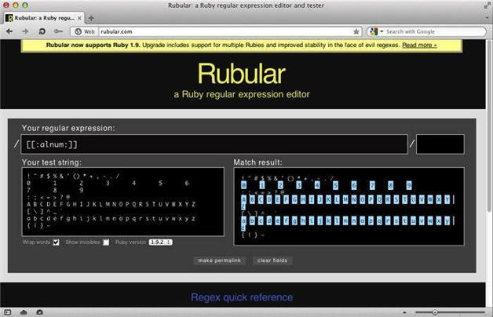

5.3 POSIX字符组
POSIX（Portable Operating System Interface，可移植操作系统接口）是IEEE维护的一系列标准。其中包含了一个正则表达式标准（ISO/IEC/IEEE 9945:2009），该标准提供了一套命名的字符组，其形式为：
[[:xxxx:]]
其中xxxx是名字，比如digit或者word。
要匹配字母及数字，可以用：
[[:alnum:]]
图5-6展示的是在Rubular中使用字母及数字字符组的情况。

图5-6 在Rubular中使用POSIX字母及数字字符组
还有一种方法就是只用简写式\w。哪种方法写起来简便，是POSIX字符组还是简写式？当然是字符最少的方法胜出。我承认自己并不常使用POSIX字符组，但是还是有必要了解一下。
对于大写或小写的字母，使用：
[[:alpha:]]
如果你想匹配ASCII范围内的字符，则用：
[[:ascii:]]
当然，还有对POSIX字符组取反的形式：
[[:^xxxx:]]
如果想匹配非字母字符，可以使用：
[[:^alpha:]]
要匹配空格或制表符，使用：
[[:space:]]
若匹配所有空白字符，则用：
[[:blank:]]
还有很多POSIX字符组，如表5-1示。
表5-1 POSIX字符组
| 字符组 | 描述 |
|---|---|
| [[:alnum:]] | 匹配字母及数字 |
| [[:alpha:]] | 匹配字母 |
| [[:ascii:]] | 匹配ASCII字符（共128个） |
| [[:blank:]] | 匹配空白字符 |
| [[:ctrl:]] | 匹配控制字符 |
| [[:digit:]] | 匹配数字 |
| [[:graph:]] | 匹配图形字符 |
| [[:lower:]] | 匹配小写字母 |
| [[:print:]] | 匹配可打印字符 |
| [[:punct:]] | 匹配标点符号 |
| [[:space:]] | 匹配空格字符 |
| [[:upper:]] | 匹配大写字母 |
| [[:word:]] | 匹配单词字符 |
| [[:xdigit:]] | 匹配十六进制数字 |
下一章专门介绍如何匹配Unicode和其他字符。